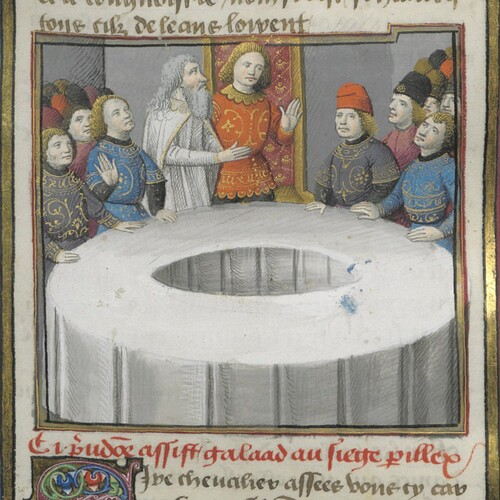

#388: Secrets Of Faerie Tales: Gwarchae Peryglus
Tuesday, March 23rd 2021, 8:33:35 pm
Available as mp3 audio and narrated by the author.
Poetically speaking, it is a description of an anonymous voting mechanism,
the peril is to be denied a second chance.
And the vote is about whether or not,
the person's claim of Greatness is true.
To spot a liar calming to be a Great Being,
that is not very difficult.
But having traveled some distance,
it probably means they don't like to have fingers pointed at them.
It probably means,
they are not a very nice person.
So imagine this noble round table that beacons to every troublemaker,
and at the table sit great many Wise and Great Beings.
I imagine, true peril was that the troublemakers in search of more power,
revealed themselves to the Wise and Great, who knew well, what it takes.
So the seat was a place that baited bad people,
and made them reveal themselves to the Great Beings of the of Arthurian Legends.
Poetically asking, did truly great beings join the table by sitting in the Seat of Peril?
legends aside, probably not, not really.
I think they would be invited by invitation and have a proper seat ready for them
- the seat of peril was for the liars to reveal themselves.
And overall, the entire idea of the round table is in it self a powerful wisdom,
the Great Beings do not wish to stand in the spotlight.
Whatever their calling, it is made a million times more powerful,
if they are not the ones at the center of attention.
A Million Human march,
unlike its leader, cannot be stopped.
And the lesson,
to learn from this is two fold.
Do not lead the change,
because than you become a weak point of that noble pursuit.
What you have to do,
is inspire great many leaders, and encourage them to inspire more.
Do not look towards liars, but when considering corruption in politics,
The changes the world needs cannot happen by shining light on liars,
they are too cunning for that.
when heroes inspire more heroes.
These Great Beings are not interested in coming together to lead the world,
and they don't need anybody to vote on their greatness.
But you see what they are doing,
they are inspiring people to rise rise.
They give answers to tough questions,
Know that only a solid dollop of Knowledge divides you,
from being as smart at the smartest beings to have ever existed.
Knowledge that these Great Beings are a constant reminder of,
school grades are not real, because they rely on tests and disconnected lessons that can only be memorized.
Knowledge is real,
it is your Inalienable Right, and your Kingdom, and Your Crown, and your path to Greatness.
There does in deed exist a Siege Perilous, but it is a question,
a question, of the choices you make that dictate the life ahead of you.
Do not let the story of you be lost to history,
live your life in such a way that your Legacy maybe celebrated in wisdom.
Create a Library of your most beloved Narrated Books,
and narrate some of them too.
Let your beautiful books bring you all the knowledge there is,
and turn around and create new knowledge.
And dream, and inspire,
and share, and help others dream.
there is much left to be done to see our Pale Blue Dot united in Wisdom, in Peace, and Foresight.

Available as mp3 audio and narrated by the author.
References
- 1. majority probably never gets caught (en.wikipedia.org)
- 2. The changes the world needs, can only happen when leaders inspire more leaders (www.youtube.com)
- 3. While we can't see the liars, we can, very clearly see the Greats (www.youtube.com)
- 4. profound (www.youtube.com)
- 5. amazing (www.youtube.com)
- 6. and bring much needed inspiration (www.youtube.com)
- 7. Help Humanity grow, we have come such a long way already (librivox.org)